Base: style-d-encyclopedia-clean-base. Body center X: 504. Target rects: {"top":{"x":359,"y":330,"width":290,"height":270},"bottom":{"x":299,"y":535,"width":410,"height":380},"dressOverlay":{"x":299,"y":330,"width":410,"height":585}}.
top
Top: simple frill blouse fit
ok
BaseRaw
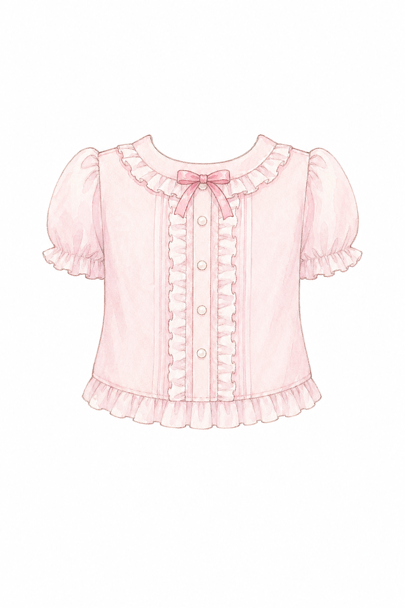
Cutout
Normalized
Composite
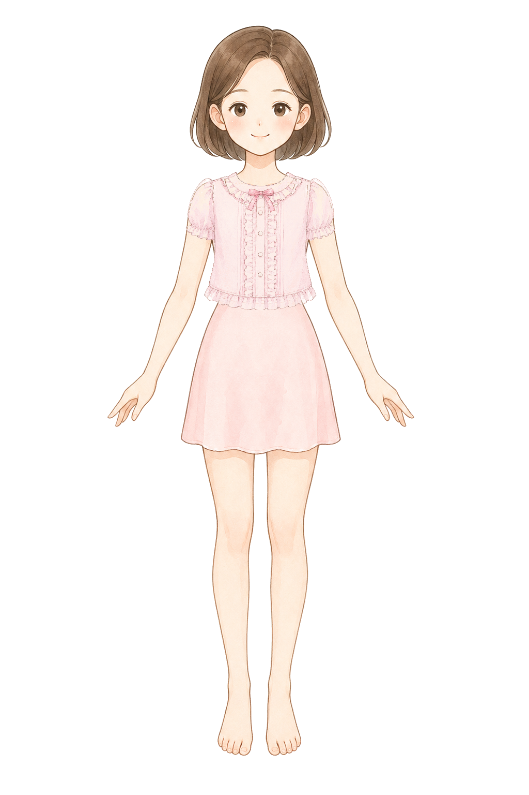
single upper clothing layer for a children princess dress-up game, original pastel storybook encyclopedia illustration matching a soft Japanese picture-book fashion encyclopedia, soft watercolor-like coloring, clean fine linework, front view blouse only, no head, no face, no hair, no hands, no legs, no mannequin, no shadow, pure white 1024 by 1536 canvas, a compact pale pink frill blouse with a clean round neckline, tiny ribbon detail, short puff sleeves kept narrow and close to the torso, waist-length hem, designed to overlay a front-facing paper doll torso without covering the arms too much, no skirt, no full dress, no necklace, no text, no watermark
bottom
Bottom: fluffy skirt fit
ok
BaseRaw
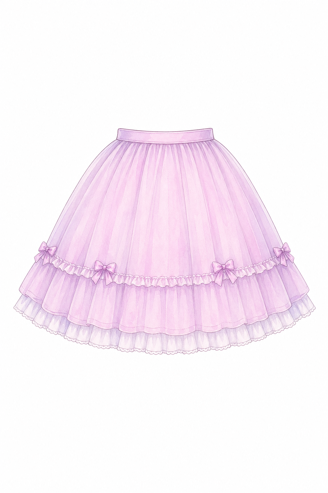
Cutout
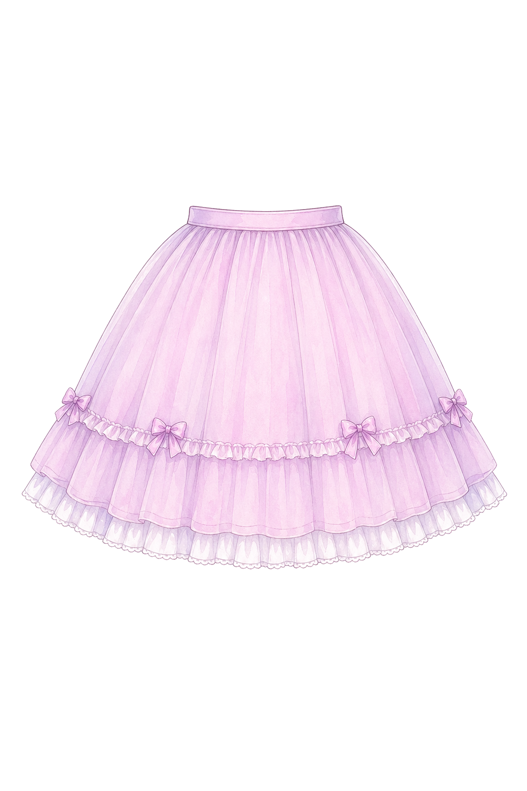
Normalized
Composite
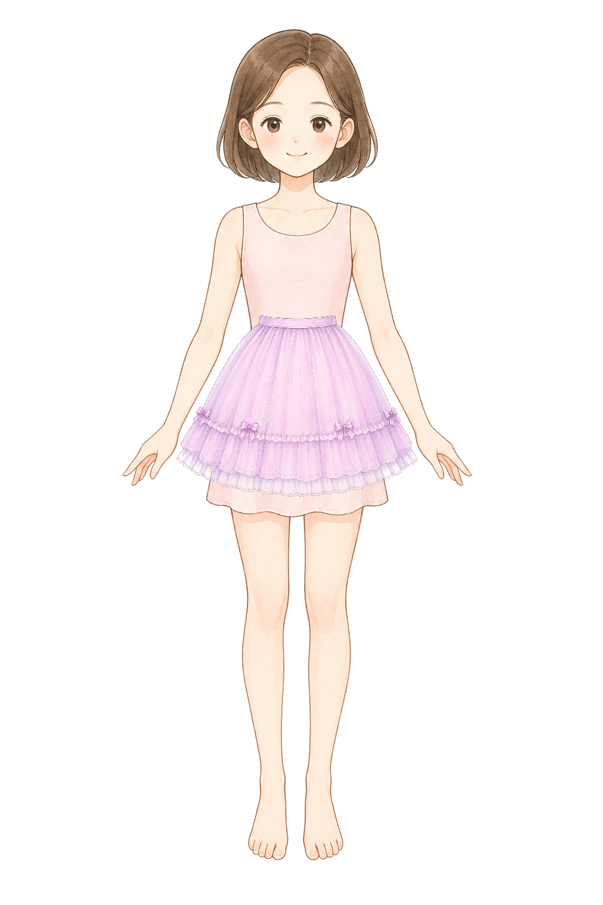
single skirt layer for a children princess dress-up game, original pastel storybook encyclopedia illustration matching a soft Japanese picture-book fashion encyclopedia, soft watercolor-like coloring, clean fine linework, front view skirt only, no torso, no body, no legs, no feet, no mannequin, no shadow, pure white 1024 by 1536 canvas, a soft lavender pink knee-length fluffy skirt with a simple waistband, gentle A-line volume, small frill details, centered and symmetrical, designed to overlay a front-facing paper doll waist and hide the base dress skirt cleanly, no blouse, no shoes, no text, no watermark
dressOverlay
Dress overlay: pastel one-piece fit
ok
BaseRaw
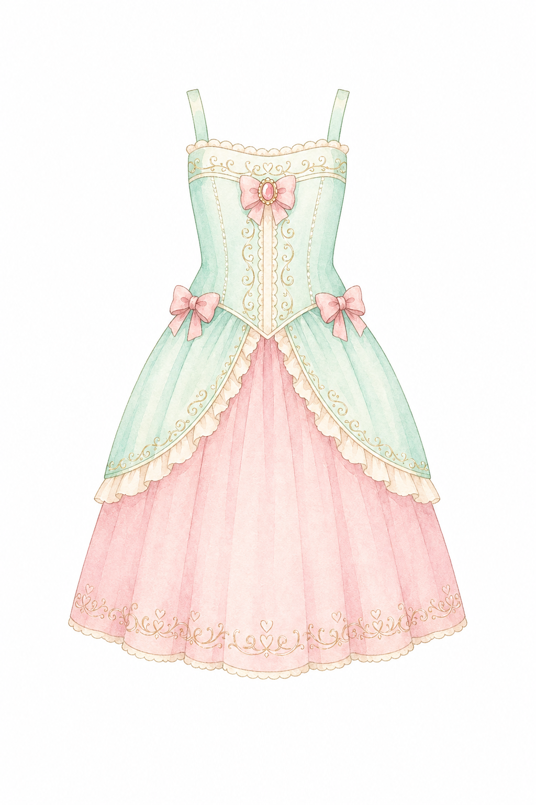
Cutout
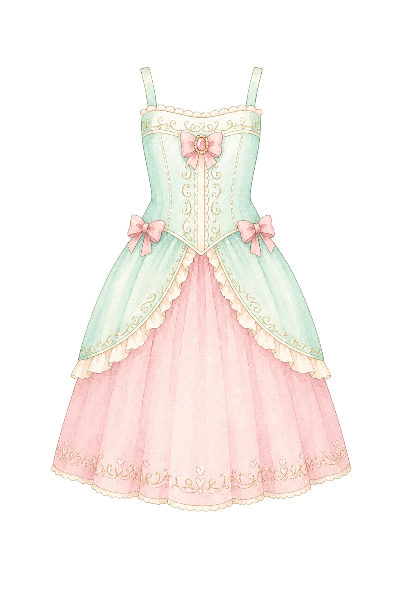
Normalized
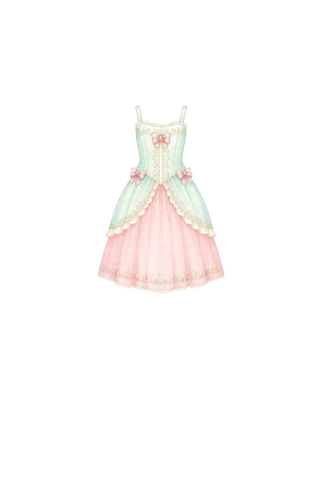
Composite
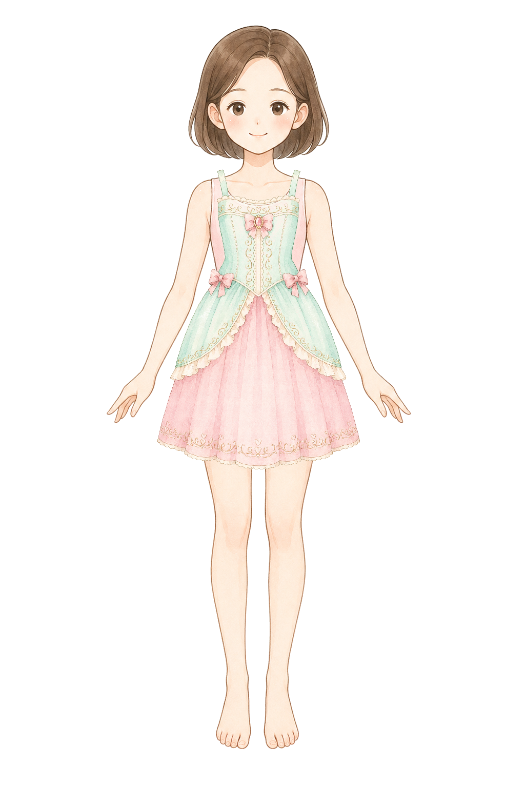
single one-piece dress overlay layer for a children princess dress-up game, original pastel storybook encyclopedia illustration matching a soft Japanese picture-book fashion encyclopedia, soft watercolor-like coloring, clean fine linework, front view dress only, no head, no face, no hair, no hands, no legs, no feet, no mannequin, no shadow, pure white 1024 by 1536 canvas, a pale mint and pink princess one-piece dress with a clean round neckline, narrow shoulder straps, fitted bodice, soft knee-length skirt, centered and symmetrical, designed to overlay a front-facing paper doll from shoulders to skirt hem without covering arms, no necklace, no shoes, no text, no watermark